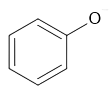

Witaj w temacie fenole
Czym są fenole?
Są to pochodne benzenu które posiadają grupe hydroksylową przyłączoną
Podstawowym przedstawicielem jest: 
czyli fenol.
Wzór ogólny to ArOH (Ar to grupa arylowa)
Właściwości:
- Są to ciecze bądź ciała stałe
- Mają właściwości odkarzające
Otrzymywanie:
Otrzymac fenole można np. za pomocą hydrolizy fluorowcopochodnych węglowodorów: C6H5Cl + H2O → C6H5OH + HCl
Dysocjacja
ArOH → ArO- + H+
ArO- to jon fenolanowy, który wygląda tak:

Jak widać jest to kwas(słaby ale silniejszy od alkoholi dzięki swojemu pierścieniowi aromatycznemu)
Fenole jako środki do dezynfekcji!
Ze względu na wlaściwości odkarzające powstała skala: "współczynnik fenoli" który mierzy skuteczność w dezynfekcji w porównaniu do fenolu
To w sumie tyle. Zapraszam do przejścia do następnego tematu.